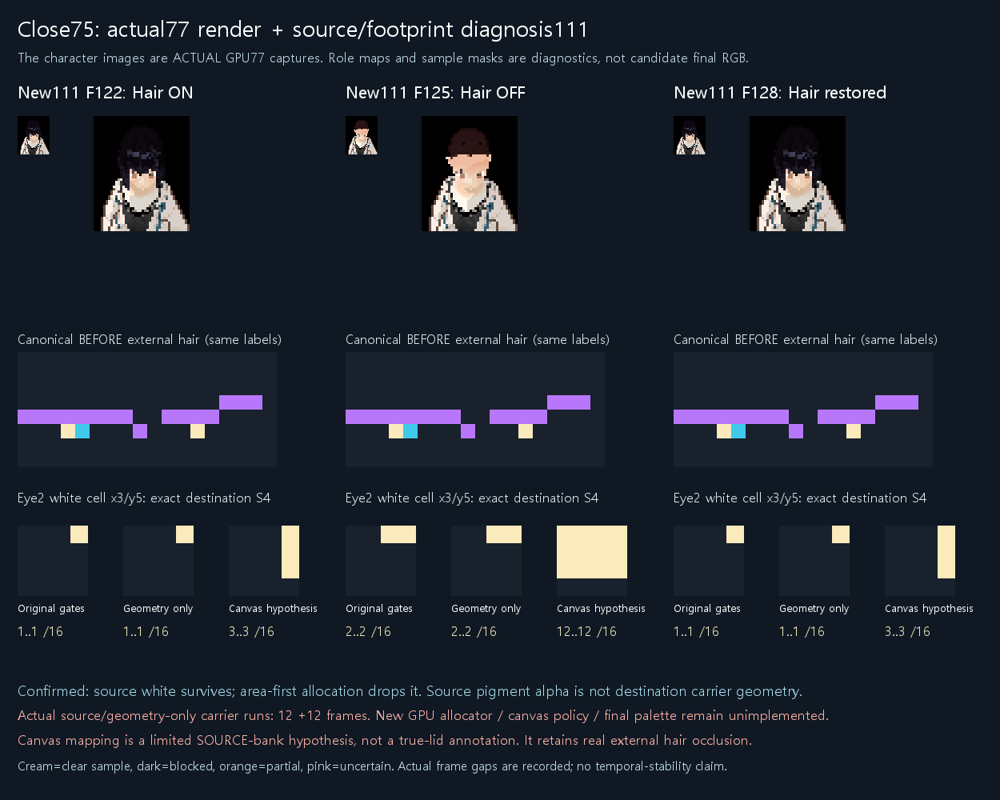

2회 정상 Play에서 실제12+12프레임을 새 sourceId로 기록하고 종료·복원을 확인했습니다. 이전107의 추정 기하를 섞지 않았습니다. 실제8× source 좌표·색, 직접 평가된 정점/UV/삼각형/재질과 같은 프레임의 카메라·등록행렬, GPU face query 및 실제 머리 S4를 보존했습니다. CPU ray와 GPU의 표본1728개는 차이0이며, 일반적인 셰이더 동등성 보장은 아닙니다.
Close75 흰자는 가림으로 완전히 사라지지 않았습니다. 새 프레임에서도 확실한 가시 source0.34375셀이 남으며 원래 분리된 흰자 성분 중 하나에 속합니다. 면적 우선 배정은 EyeUnion1.125를1셀로 표현하는 오차를 먼저 줄여 그 성분을 버렸습니다. source 성분 손실을 먼저 비교하는 후보는 고정 최소 셀 수 없이 그것을 남깁니다. 하나의 출력 셀이 여러 source 성분을 대표할 수도 있는 별도 반례도 검사했습니다.
배정만 되돌려도 완성은 아닙니다. 원래 위치의 흰자 carrier는 네이티브 조건에서16표본 중1~2개만 보입니다. 그 뒤에는 원래 색소 알파를 목적지 기하 범위로 다시 사용한 문제와 피부/눈꺼풀 소유권 문제가 있습니다. 색소 알파 분리용 새 NativeCarrier111.shader는 소유한 임시 재질에만 연결해 실제 GPU12상태를 검증했습니다. 원본 색 공급·실제 occluder alpha·제품77 기본값은 유지했습니다. C# Assets import/domain reload도 없었습니다.

인물 그림은 새로 저장한 실제77 GPU 렌더입니다. role map 및 표본 마스크는 진단이며 후보의 최종 RGB가 아닙니다. 머리ON/OFF/복원에서 가림 전 canonical 배치 집합은 동일합니다. 원본 bank 범위만 특징 바탕으로 묶는 제한적 가설에서는 머리OFF 흰자가2/16→12/16으로 늘지만 ON에서는 실제 머리 가림 때문에3/16이 남습니다. 이를 항상 보존해야 할 흰자 픽셀이라고 강제하지 않았습니다.
미채택: 바탕 연결 가설과 전체2.2 배정기는 GPU에 아직 적용하지 않았습니다. 현재 face의 eye owner는 모든 얼굴 정점을 가까운 눈으로 나눈 값이어서 실제 눈꺼풀 표지가 아닙니다. source bank 범위도 원래 제작자의 실제 안검 경계라고 단정할 수 없습니다. 부분Close의 홍채/흰자 전체 support를 어떤 변형 carrier에 공동 배치할지, 실제 lid와 generic skin을 어떻게 구분할지가 남아 있습니다. 모든 피부를 무시하거나 거의 가려진 잔여 표본을 성공으로 세지 않았습니다. 원천적 불가능성이 증명된 결과도 아닙니다. 유한 팔레트·외곽선은 별도 미완입니다.
종료 뒤 Edit/컴파일 아님/dirty31/입력 설정 동일 객체·JSON·장치 보존. 직렬화47개 중46개 동일,1개 AssetImporter 래퍼는 조회 불가이며 PlayerSettings 본문은 동일했습니다. 두 실행 모두 RT30→30, 소유 자원 해제·global/옵션/시간/pipeline 복원을 확인했습니다. Unity CPU할당 카운터는 각 실행에서 약35.49MiB/25.81MiB 늘었고 OS 물리RAM이나 누수 확정을 뜻하지 않습니다. 새 샘플은 frame gap이 있으므로 시간 안정성 완성을 주장하지 않습니다.
실행·복원·한계 / 오라클/변환 검사 / 실제GPU carrier 수정 / 런타임 입력·수명·남은 연결 / 함수 위치 / 새24개 source 입력. 코드·인계·선택 커밋으로 보존하며 외부 Argon과 직접 연락하지 않았습니다.